Set Language and Notation
67.
,
and
.
Find .
Find .
......................... [2]
Paper 2
68.
In a class of 20 students, some take part in football (F), singing (S) and athletics (A).
The Venn diagram shows part of the information.
(a) Find the number of students who do not take part in any of these activities.
The Venn diagram shows part of the information.

(a) Find the number of students who do not take part in any of these activities.
(a) ......................... [1]
(b) Use set notation to describe what 7 represents.
(b) ......................... [3]
Paper 2
69.
In a survey, 40 teachers are asked which forms of transport they regularly use.
The Venn diagram shows part of the information about their responses.
16 teachers use a car.
8 teachers use a taxi only.
(a)(i) Complete the Venn diagram.
The Venn diagram shows part of the information about their responses.

16 teachers use a car.
8 teachers use a taxi only.
(a)(i) Complete the Venn diagram.
(a)(i) See diagram [2]
(ii) Find the number of teachers who use both bus and taxi.
(a)(ii) ......................... [1]
(b)(i) Find
.
(b)(i) ......................... [1]
(ii) Describe in words what the 5 in the Venn diagram represents.
(b)(ii) ......................... [1]
Paper 2
70.
(a) Complete the Venn diagram to show this information.

(b)(i) A number is chosen at random from ε.
Find the probability that it is a member of .
(b)(i) ......................... [1]
(ii) A composite number is chosen at random.
Find the probability that it is a member of .
Find the probability that it is a member of .
(b)(ii) ......................... [1]
Paper 2
71.
The Venn diagram shows the relationship of set A, B and C.
(a) Use set notation to complete these statements:
(i) {1, 2, 3, 5, 6} ......................... A

(a) Use set notation to complete these statements:
(i) {1, 2, 3, 5, 6} ......................... A
(i) ......................... [1]
(ii) ......................... = {2, 4, 6}
(ii) ......................... [1]
(iii) ......................... =
(iii) ......................... [1]
(b) Find
.
(b) ......................... [1]
Paper 2
72.
A teacher asks 45 students which drink they enjoy.
The Venn diagram shows the results.
(a) Use the Venn diagram to find:
(i) the number of students who enjoy juice,
The Venn diagram shows the results.

(a) Use the Venn diagram to find:
(i) the number of students who enjoy juice,
(i) ......................... [1]
(ii)
,
(ii) ......................... [1]
(iii) The number of students who enjoy fizzy drinks and juice but not milk.
(iii) ......................... [1]
(b) Find the value of
.
(b) y = ......................... [1]
(c) A student is chosen at random.
Find the probability that this student enjoys:
(i) Fizzy drinks and juice,
Find the probability that this student enjoys:
(i) Fizzy drinks and juice,
(c)(i) ......................... [1]
(ii) Either milk or juice.
(c)(ii) ......................... [2]
Paper 2
37.
The Venn diagram shows the number of students who study Art (A), Biology (B), and Chemistry (C) in one class.
There are 30 students in the class, 14 students study Biology while 10 study Arts.
(a) Find the values of x, y and z.
There are 30 students in the class, 14 students study Biology while 10 study Arts.

x = ......................... y = ......................... z = ......................... [3]
(b) Find
.
......................... [1]
(c) How many students study at least two subjects?
......................... [1]
(d) Describe the set in
in words.
......................... [1]
(e) A student is chosen at random from the class.
Find the probability that a student studies Biology only.
Find the probability that a student studies Biology only.
......................... [1]
(f) Two students are chosen at random from the class.
Find the probability that one of them studies art only and the other studies biology only.
Find the probability that one of them studies art only and the other studies biology only.
......................... [3]
Paper 4
38.
Given that
,
and
.
(a) Express p in terms of x.

p = ......................... [1]
(b) Find:
(i) The smallest possible value of y,
(i) The smallest possible value of y,
y = ......................... [2]
(ii) The largest possible value of x,
x = ......................... [1]
(iii) The value of q if p = 45.
q = ......................... [1]
Paper 4
39.
In a class of 55 students, 30 are members of Phela club (P), and 20 are members of Science Club (S), while some are members of English club (E).
The other information is shown in the Venn diagram.
(a) Complete the Venn diagram.
The other information is shown in the Venn diagram.

See diagram [3]
(b) Find the number of students who are members of:
(i) Both English Club and Phela club but not Science club,
(i) Both English Club and Phela club but not Science club,
......................... [1]
(ii) Two clubs only.
......................... [1]
(c) Find:
(i) ,
(i) ,
......................... [1]
(ii)
.
......................... [1]
(d) A student is chosen at random from the class.
Find the probability that the student is a member of:
(i) Both English club and Phela club,
Find the probability that the student is a member of:
(i) Both English club and Phela club,
......................... [1]
(ii) All the three clubs.
......................... [1]
(e) A student is chosen at random from the class to be a school prefect.
Another student is then chosen at random from the remaining, to be a class monitor.
Find the probability that one is a member of the Science club only while the other is a member of the Phela club only.
Another student is then chosen at random from the remaining, to be a class monitor.
Find the probability that one is a member of the Science club only while the other is a member of the Phela club only.
......................... [3]
Paper 4
40.
In a survey, 60 students are asked whether they have Birth Certificates (B), Identity Documents (I) or Passports (P).
The results are represented in the Venn diagram.
(a) Find the number of students who have:
(i) All the three documents,
The results are represented in the Venn diagram.

(i) All the three documents,
......................... [1]
(ii) Birth Certificates and Identity Documents only.
......................... [1]
(b) Find
.
......................... [1]
(c) Use set notation to represent the number of students who have Birth Certificates only.
......................... [1]
Paper 4